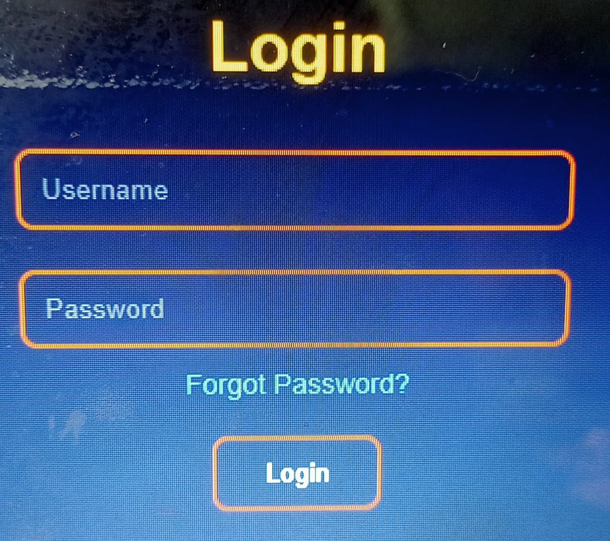
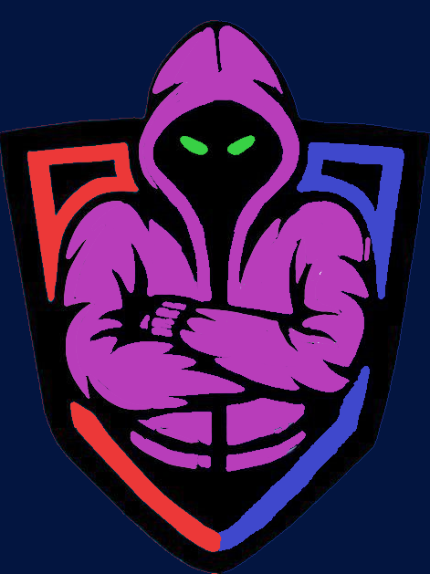

My Skills
Technical Skills
HTML
CSS
My services
Following services are provided by me:
- Webpage Developing
- UI/UX Designing
- FrontEnd Developing
- Video Editing
My Projects



I'm interested in HTML, CSS, and JS. I've made some projects using HTML, CSS, JS and Py.
PHONE NO. +91 9315425865
EMAIL - deathkingpro27@gmail.com
I'm Rishabh Raj Singh - a curious student who loves coding, technology, perfection, and creative problem-solving. I enjoy building small-projects, learning new programming concepts, and improving my skills through experimentation. Outside coding I like playing some mobile games and watching cricket, which teach me teamwork and focus. My goal is to keep learning and growing a strong foundation for a future in technology and innovation. I've an experience of 3years in HTML & CSS. I believe every line of code tells a story - one that blends imagination with precision. For me, learning never stops - it evolves with every challenge, every project, and every spark of curiosity that keeps me moving forward. My main focus is FrontEnd Development - crafting interfaces that feel alive and intuitive. I enjoy turning lines of HTML & CSS into visual stories that people can interact with. I love exploring new codes & challenges. I don't participate in challenges for winning only, I participate for fun, learning new experience and bringing new ideas.
Languages:
HTML
CSS
